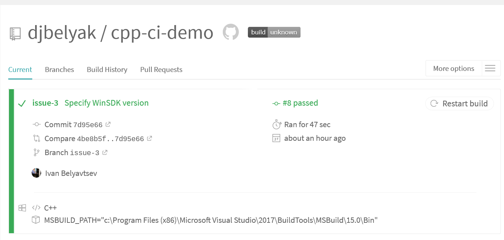
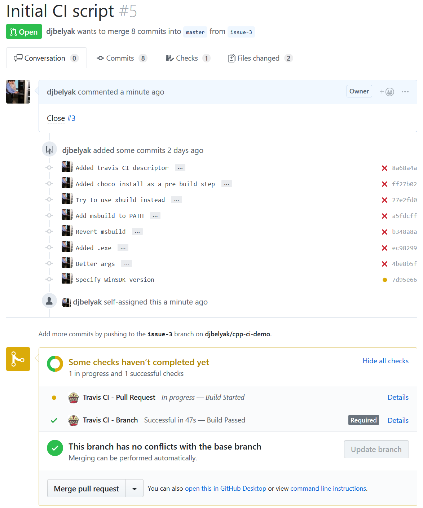
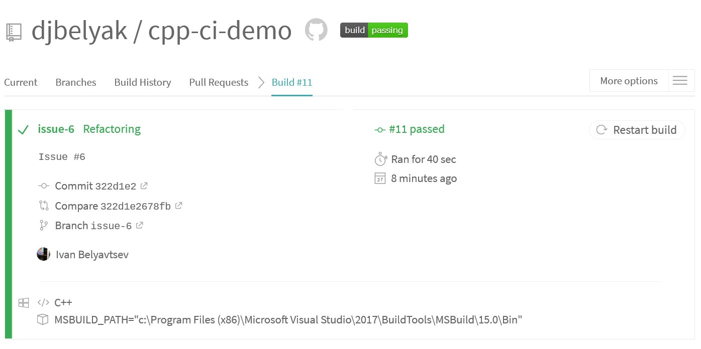
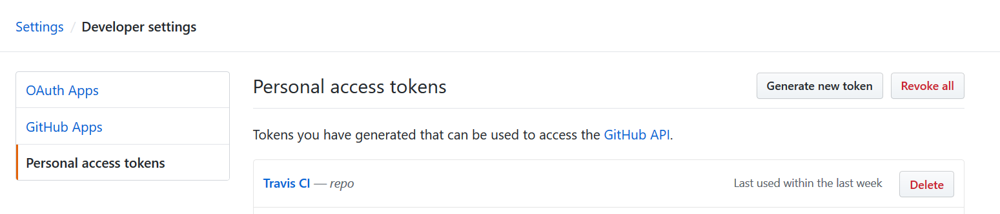
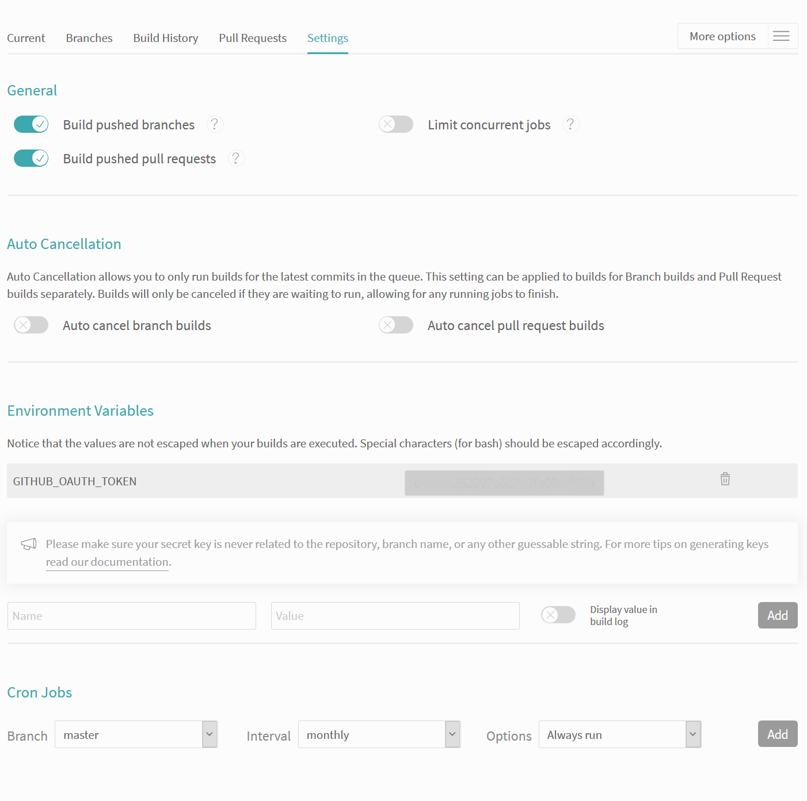
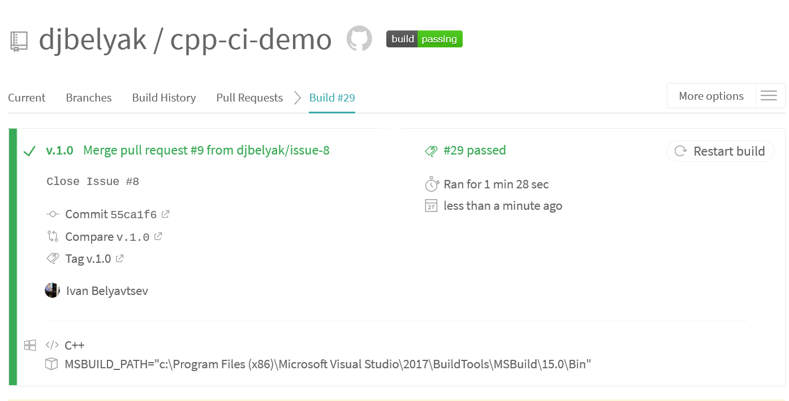
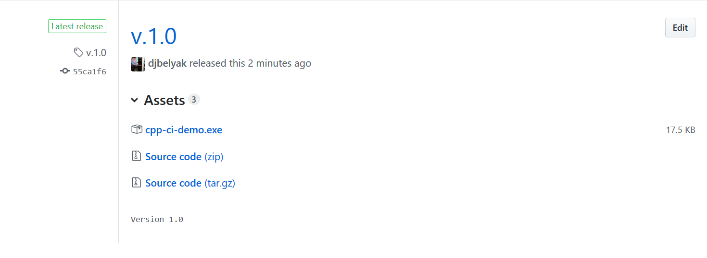
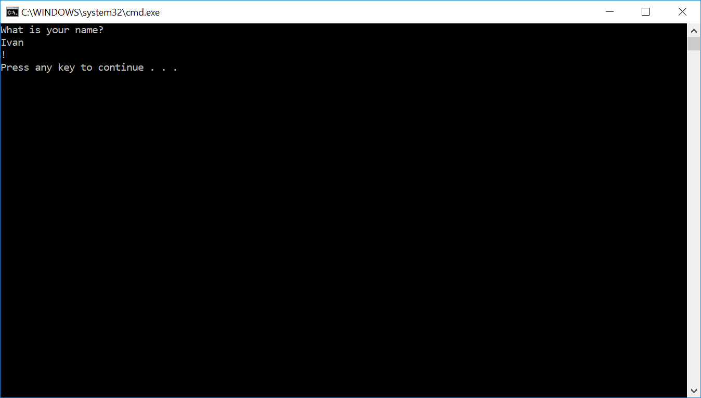
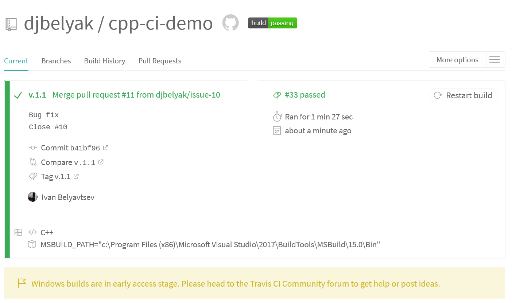
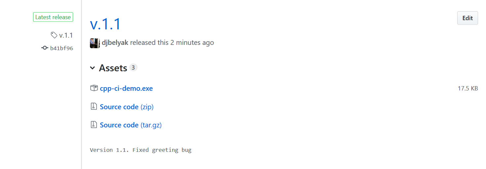

Курс "Инструменты проектного управления"
Иван Павлович Белявцев
18.12.2018
https://github.com/djbelyak/cpp-ci-demo
#include <iostream>
#include <string>
int main(char argv, const char** argc)
{
std::string sName;
std::cout << "What is your name?" << std::endl;
std::cin >> sName;
std::cout << "Hello, " << sName << "!" << std::endl;
return 0;
}cpp-ci-demo.cpp
...
# Visual Studio
.vs/
Debug/
Release/
x64/
*.user
.gitignore
Activate и выбрать репозитории.travis.yml в корень репозитория.language: cpp
os: windows
env:
- MSBUILD_PATH="c:\Program Files (x86)\Microsoft Visual Studio\2017\BuildTools\MSBuild\15.0\Bin"
before_script:
- choco install windows-sdk-10.0 -y --version 10.0.26624
script:
- export PATH=$MSBUILD_PATH:$PATH
- msbuild.exe ./cpp-ci-demo.vcxproj //p:Configuration=release //p:Platform=x86 //m
- msbuild.exe ./cpp-ci-demo.vcxproj //p:Configuration=release //p:Platform=x64 //m.travis.yml


#include "greetings.h"
#include <iostream>
int main(char argv, const char** argc)
{
std::string sName;
std::cout << "What is your name?" << std::endl;
std::cin >> sName;
std::cout << greetings(sName) << std::endl;
return 0;
}cpp-ci-demo.cpp
#pragma once
#include <string>
extern std::string greetings(std::string in_sName);greetings.h
#include "greetings.h"
std::string greetings(std::string in_sName)
{
std::string sResult = "Hello, ";
sResult += in_sName;
sResult = "!";
return sResult;
}greetings.cpp

https://github.com/settings/tokens


# ...
deploy:
provider: releases
api_key:
secure: "$GITHUB_OAUTH_TOKEN"
file:
- "release/cpp-ci-demo.exe"
skip_cleanup: true
on:
tags: true.travis.yml
> git checkout master
> git tag -a v.1.0 -m "Версия 1.0"
> git push --tags


#include "greetings.h"
std::string greetings(std::string in_sName)
{
std::string sResult = "Hello, ";
sResult += in_sName;
sResult = "!";
return sResult;
}greetings.cpp
#include "greetings.h"
std::string greetings(std::string in_sName)
{
std::string sResult = "Hello, ";
sResult += in_sName;
sResult += "!";
return sResult;
}greetings.cpp


https://ru.surveymonkey.com/r/55XZNNY